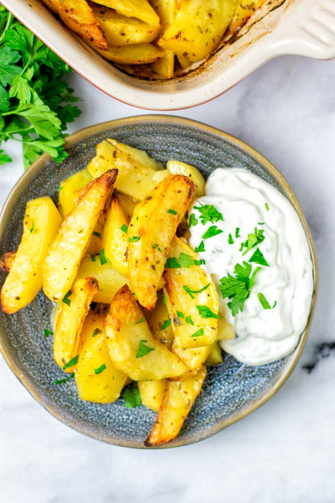

Best greek recipe!

Greek Lemon Potatoes
Roasted thick potato wedges are flavored with a garlic-lemon broth. This is one addictive dish!
Ingredients
- 5 Garlic cloves
- 1 Lemon, wedges
- 1 tbsp Oregano, dried
- 1 1/4 kg Potatoes
How do it?
- Preheat oven to 200°C/390°F
- Cut potatoes
- Coat potatoes
- Roast 45 minutes
- To crisp the potatoes (optional)
- Roast 35 minutes
- Heat pan juices
- Plate up
Some other saucy greek recipes!